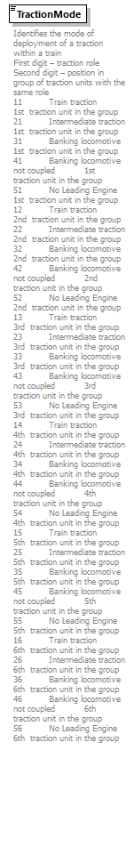

| diagram |  | |||||||||||||||||||||||||||||||||||||||||||||||||||||||||||||||||||||||||||||||||||||||||||||||||||
| namespace | http://taf-jsg.info/schemes | |||||||||||||||||||||||||||||||||||||||||||||||||||||||||||||||||||||||||||||||||||||||||||||||||||
| type | restriction of xs:integer | |||||||||||||||||||||||||||||||||||||||||||||||||||||||||||||||||||||||||||||||||||||||||||||||||||
| properties |
|
|||||||||||||||||||||||||||||||||||||||||||||||||||||||||||||||||||||||||||||||||||||||||||||||||||
| used by |
|
|||||||||||||||||||||||||||||||||||||||||||||||||||||||||||||||||||||||||||||||||||||||||||||||||||
| facets |
|
|||||||||||||||||||||||||||||||||||||||||||||||||||||||||||||||||||||||||||||||||||||||||||||||||||
| annotation |
|
|||||||||||||||||||||||||||||||||||||||||||||||||||||||||||||||||||||||||||||||||||||||||||||||||||
| source | <xs:element name="TractionMode"> <xs:annotation> <xs:documentation>Identifies the mode of deployment of a traction within a train First digit – traction role Second digit – position in group of traction units with the same role 11 Train traction 1st traction unit in the group 21 Intermediate traction 1st traction unit in the group 31 Banking locomotive 1st traction unit in the group 41 Banking locomotive not coupled 1st traction unit in the group 51 No Leading Engine 1st traction unit in the group 12 Train traction 2nd traction unit in the group 22 Intermediate traction 2nd traction unit in the group 32 Banking locomotive 2nd traction unit in the group 42 Banking locomotive not coupled 2nd traction unit in the group 52 No Leading Engine 2nd traction unit in the group 13 Train traction 3rd traction unit in the group 23 Intermediate traction 3rd traction unit in the group 33 Banking locomotive 3rd traction unit in the group 43 Banking locomotive not coupled 3rd traction unit in the group 53 No Leading Engine 3rd traction unit in the group 14 Train traction 4th traction unit in the group 24 Intermediate traction 4th traction unit in the group 34 Banking locomotive 4th traction unit in the group 44 Banking locomotive not coupled 4th traction unit in the group 54 No Leading Engine 4th traction unit in the group 15 Train traction 5th traction unit in the group 25 Intermediate traction 5th traction unit in the group 35 Banking locomotive 5th traction unit in the group 45 Banking locomotive not coupled 5th traction unit in the group 55 No Leading Engine 5th traction unit in the group 16 Train traction 6th traction unit in the group 26 Intermediate traction 6th traction unit in the group 36 Banking locomotive 6th traction unit in the group 46 Banking locomotive not coupled 6th traction unit in the group 56 No Leading Engine 6th traction unit in the group </xs:documentation> </xs:annotation> <xs:simpleType> <xs:restriction base="xs:integer"> <xs:minInclusive value="11"/> <xs:maxInclusive value="99"/> <xs:enumeration value="11"/> <xs:enumeration value="21"/> <xs:enumeration value="31"/> <xs:enumeration value="41"/> <xs:enumeration value="51"/> <xs:enumeration value="12"/> <xs:enumeration value="22"/> <xs:enumeration value="32"/> <xs:enumeration value="42"/> <xs:enumeration value="52"/> <xs:enumeration value="13"/> <xs:enumeration value="23"/> <xs:enumeration value="33"/> <xs:enumeration value="43"/> <xs:enumeration value="53"/> <xs:enumeration value="14"/> <xs:enumeration value="24"/> <xs:enumeration value="34"/> <xs:enumeration value="44"/> <xs:enumeration value="54"/> <xs:enumeration value="15"/> <xs:enumeration value="25"/> <xs:enumeration value="35"/> <xs:enumeration value="45"/> <xs:enumeration value="55"/> <xs:enumeration value="16"/> <xs:enumeration value="26"/> <xs:enumeration value="36"/> <xs:enumeration value="46"/> <xs:enumeration value="56"/> </xs:restriction> </xs:simpleType> </xs:element> |